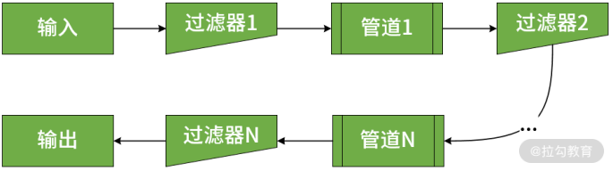
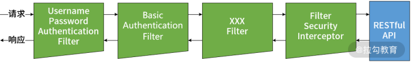
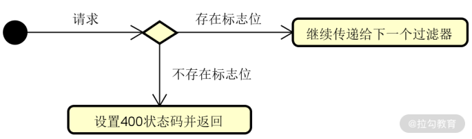
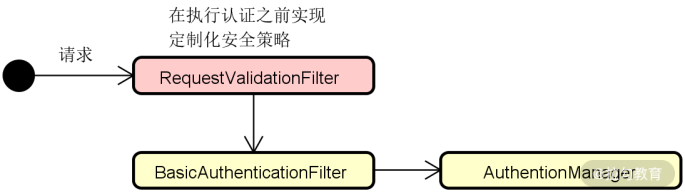
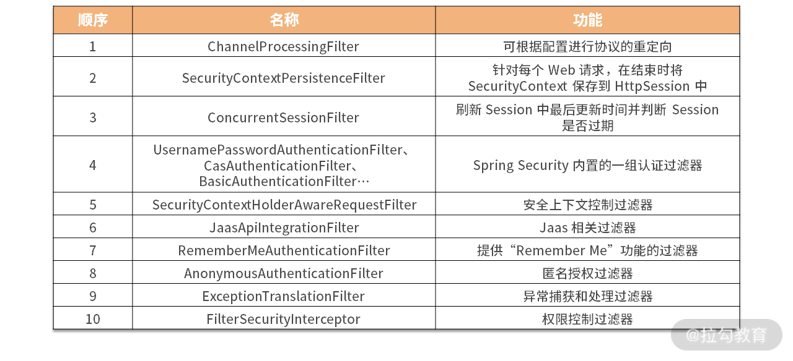
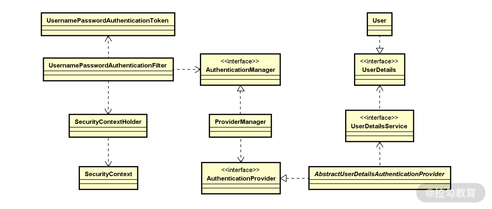
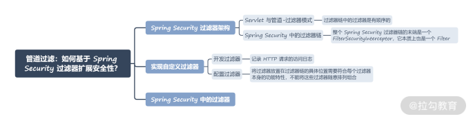

- 00 开篇词 Spring Security，为你的应用安全与职业之路保驾护航.md.html
- 01 顶级框架：Spring Security 是一款什么样的安全性框架？.md.html
- 02 用户认证：如何使用 Spring Security 构建用户认证体系？.md.html
- 03 认证体系：如何深入理解 Spring Security 用户认证机制？.md.html
- 04 密码安全：Spring Security 中包含哪些加解密技术？.md.html
- 05 访问授权：如何对请求的安全访问过程进行有效配置？.md.html
- 06 权限管理：如何剖析 Spring Security 的授权原理？.md.html
- 07 案例实战：使用 Spring Security 基础功能保护 Web 应用.md.html
- 08 管道过滤：如何基于 Spring Security 过滤器扩展安全性？.md.html
- 09 攻击应对：如何实现 CSRF 保护和跨域 CORS？.md.html
- 10 全局方法：如何确保方法级别的安全访问？.md.html
- 11 案例实战：使用 Spring Security 高级主题保护 Web 应用.md.html
- 12 开放协议：OAuth2 协议解决的是什么问题？.md.html
- 13 授权体系：如何构建 OAuth2 授权服务器？.md.html
- 14 资源保护：如何基于 OAuth2 协议配置授权过程？.md.html
- 15 令牌扩展：如何使用 JWT 实现定制化 Token？.md.html
- 16 案例实战：基于 Spring Security 和 Spring Cloud 构建微服务安全架构.md.html
- 17 案例实战：基于 Spring Security 和 OAuth2 实现单点登录.md.html
- 18 技术趋势：如何为 Spring Security 添加响应式编程特性？.md.html
- 19 测试驱动：如何基于 Spring Security 测试系统安全性？.md.html
- 20 结束语 以终为始，Spring Security 的学习总结.md.html
08 管道过滤：如何基于 Spring Security 过滤器扩展安全性？
在 06 讲“权限管理：如何剖析 Spring Security 的授权原理？”中，我们介绍 Spring Security 授权流程时提到了过滤器的概念。今天，我们就直面这个主题，详细分析 Spring Security 中的过滤器架构，进一步学习实现自定义过滤器的系统方法。
Spring Security 过滤器架构
过滤器是一种通用机制，在处理 Web 请求的过程中发挥了重要作用。可以说，目前市面上所有的 Web 开发框架都或多或少使用了过滤器完成对请求的处理，Spring Security 也不例外。Spring Security 中的过滤器架构是基于 Servlet构建的，所以我们先从 Servlet 中的过滤器开始说起。
Servlet 与管道-过滤器模式
和业界大多数处理 Web 请求的框架一样，Servlet 中采用的最基本的架构就是管道-过滤器（Pipe-Filter）架构模式。管道-过滤器架构模式的示意图如下所示：

管道-过滤器架构模式示意图
结合上图我们可以看到，处理业务逻辑的组件被称为过滤器，而处理结果通过相邻过滤器之间的管道进行传输，这样就构成了一个过滤器链。
在 Servlet 中，代表过滤器的 Filter 接口定义如下：
public interface Filter {
public void init(FilterConfig filterConfig) throws ServletException;
public void doFilter(ServletRequest request, ServletResponse response, FilterChain chain) throws IOException, ServletException;
public void destroy();
}
当应用程序启动时，Servlet 容器就会调用 init() 方法。这个方法只会在容器启动时调用一次，因此包含了初始化过滤器的相关代码。对应的，destroy() 方法用于释放该过滤器占有的资源。
一个过滤器组件所包含的业务逻辑应该位于 doFilter() 方法中，该方法带有三个参数，分别是ServletRequest、ServletResponse 和 FilterChain。这三个参数都很重要，我们一一说明。
- ServletRequest：表示 HTTP 请求，我们使用该对象获取有关请求的详细信息。
- ServletResponse：表示 HTTP 响应，我们使用该对象构建响应结果，然后将其发送回客户端或沿着过滤器链向后传递。
- FilterChain：表示过滤器链，我们使用该对象将请求转发到链中的下一个过滤器。
请注意，过滤器链中的过滤器是有顺序的，这点非常重要，我们在本讲后续内容中会针对这点展开讲解。
Spring Security 中的过滤器链
在 Spring Security 中，其核心流程的执行也是依赖于一组过滤器，这些过滤器在框架启动后会自动进行初始化，如图所示：

Spring Security 中的过滤器链示意图
在上图中，我们看到了几个常见的 Filter，比如 BasicAuthenticationFilter、UsernamePasswordAuthenticationFilter 等，这些类都直接或间接实现了 Servlet 中的 Filter 接口，并完成某一项具体的认证机制。例如，上图中的 BasicAuthenticationFilter 用来验证用户的身份凭证；而 UsernamePasswordAuthenticationFilter 会检查输入的用户名和密码，并根据认证结果决定是否将这一结果传递给下一个过滤器。
请注意，整个 Spring Security 过滤器链的末端是一个 FilterSecurityInterceptor，它本质上也是一个 Filter。但与其他用于完成认证操作的 Filter 不同，它的核心功能是实现权限控制，也就是用来判定该请求是否能够访问目标 HTTP 端点。FilterSecurityInterceptor 对于权限控制的粒度可以到方法级别，能够满足前面提到的精细化访问控制。我们在 06 讲“权限管理：如何剖析 Spring Security 的授权原理？”中已经对这个拦截器做了详细的介绍，这里就不再展开了。
通过上述分析，我们明确了在 Spring Security 中，认证和授权这两个安全性需求是通过一系列的过滤器来实现的。而过滤器的真正价值不仅在于实现了认证和授权，更为开发人员提供了一个扩展 Spring Security 框架的有效手段。
实现自定义过滤器
在 Spring Security 中创建一个新的过滤器并不复杂，只需要遵循 Servlet 所提供的 Filter 接口约定即可。
开发过滤器
讲到开发自定义的过滤器，最经典的应用场景就是记录 HTTP 请求的访问日志。如下所示就是一种常见的实现方式：
public class LoggingFilter implements Filter {
private final Logger logger =
Logger.getLogger(AuthenticationLoggingFilter.class.getName());
@Override
public void doFilter(ServletRequest request, ServletResponse response, FilterChain filterChain) throws IOException, ServletException {
HttpServletRequest httpRequest = (HttpServletRequest) request;
//从 ServletRequest 获取请求数据并记录
String uniqueRequestId = httpRequest.getHeader("UniqueRequestId");
logger.info("成功对请求进行了认证： " + uniqueRequestId);
//将请求继续在过滤器链上进行传递
filterChain.doFilter(request, response);
}
}
这里我们定义了一个 LoggingFilter，用来记录已经通过用户认证的请求中包含的一个特定的消息头“UniqueRequestId”，通过这个唯一的请求 Id，我们可以对请求进行跟踪、监控和分析。在实现一个自定义的过滤器组件时，我们通常会从 ServletRequest 中获取请求数据，并在 ServletResponse 中设置响应数据，然后通过 filterChain 的 doFilter() 方法将请求继续在过滤器链上进行传递。
接下来，我们想象这样一种场景，业务上我们需要根据客户端请求头中是否包含某一个特定的标志位，来决定请求是否有效。如图所示：

根据标志位设计过滤器示意图
这在现实开发过程中也是一种常见的应用场景，可以实现定制化的安全性控制。针对这种应用场景，我们可以实现如下所示的 RequestValidationFilter 过滤器：
public class RequestValidationFilter implements Filter {
@Override
public void doFilter(ServletRequest request, ServletResponse response, FilterChain filterChain) throws IOException, ServletException {
HttpServletRequest httpRequest = (HttpServletRequest) request;
HttpServletResponse httpResponse = (HttpServletResponse) response;
String requestId = httpRequest.getHeader("SecurityFlag");
if (requestId == null || requestId.isBlank()) {
httpResponse.setStatus(HttpServletResponse.SC_BAD_REQUEST);
return;
}
filterChain.doFilter(request, response);
}
}
这里我们从 HttpServletRequest 对象的请求头中获取了“SecurityFlag”标志位，否则将直接抛出一个 400 Bad Request 响应结果。根据需要，我们也可以实现各种自定义的异常处理逻辑。
配置过滤器
现在，我们已经实现了几个有价值的过滤器了，下一步就是将这些过滤器整合到 Spring Security 的整个过滤器链中。这里，我想特别强调一点，和 Servlet 中的过滤器一样，Spring Security 中的过滤器也是有顺序的。也就是说，将过滤器放置在过滤器链的具体位置需要符合每个过滤器本身的功能特性，不能将这些过滤器随意排列组合。
我们来举例说明合理设置过滤器顺序的重要性。在[“用户认证：如何使用 Spring Security 构建用户认证体系？”]一讲中我们提到了 HTTP 基础认证机制，而在 Spring Security 中，实现这一认证机制的就是 BasicAuthenticationFilter。
如果我们想要实现定制化的安全性控制策略，就可以实现类似前面介绍的 RequestValidationFilter 这样的过滤器，并放置在 BasicAuthenticationFilter 前。这样，在执行用户认证之前，我们就可以排除掉一批无效请求，效果如下所示：

RequestValidationFilter 的位置示意图
上图中的 RequestValidationFilter 确保那些没有携带有效请求头信息的请求不会执行不必要的用户认证。基于这种场景，把 RequestValidationFilter 放在 BasicAuthenticationFilter 之后就不是很合适了，因为用户已经完成了认证操作。
同样，针对前面已经构建的 LoggingFilter，原则上我们可以把它放在过滤器链的任何位置，因为它只记录了日志。但有没有更合适的位置呢？结合 RequestValidationFilter 来看，同样对于一个无效的请求而言，记录日志是没有什么意义的。所以 LoggingFilter 应该放置在 RequestValidationFilter 之后。另一方面，对于日志操作而言，通常只需要记录那些已经通过认证的请求，所以也推荐将 LoggingFilter 放在 BasicAuthenticationFilter 之后。最终，这三个过滤器之间的关系如下图所示：

三个过滤器的位置示意图
在 Spring Security 中，提供了一组可以往过滤器链中添加过滤器的工具方法，包括 addFilterBefore()、addFilterAfter()、addFilterAt() 以及 addFilter() 等，它们都定义在 HttpSecurity 类中。这些方法的含义都很明确，使用起来也很简单，例如，想要实现如上图所示的效果，我们可以编写这样的代码：
@Override
protected void configure(HttpSecurity http) throws Exception {
http.addFilterBefore(
new RequestValidationFilter(),
BasicAuthenticationFilter.class)
.addFilterAfter(
new LoggingFilter(),
BasicAuthenticationFilter.class)
.authorizeRequests()
.anyRequest()
.permitAll();
}
这里，我们使用了 addFilterBefore() 和 addFilterAfter() 方法在 BasicAuthenticationFilter 之前和之后分别添加了 RequestValidationFilter 和 LoggingFilter。
Spring Security 中的过滤器
下表列举了 Spring Security 中常用的过滤器名称、功能以及它们的顺序关系：

Spring Security 中的常见过滤器一览表
这里以最基础的 UsernamePasswordAuthenticationFilter 为例，该类的定义及核心方法 attemptAuthentication 如下所示：
public class UsernamePasswordAuthenticationFilter extends
AbstractAuthenticationProcessingFilter {
public Authentication attemptAuthentication(HttpServletRequest request,
HttpServletResponse response) throws AuthenticationException {
if (postOnly && !request.getMethod().equals("POST")) {
throw new AuthenticationServiceException(
"Authentication method not supported: " + request.getMethod());
}
String username = obtainUsername(request);
String password = obtainPassword(request);
if (username == null) {
username = "";
}
if (password == null) {
password = "";
}
username = username.trim();
UsernamePasswordAuthenticationToken authRequest = new UsernamePasswordAuthenticationToken(
username, password);
setDetails(request, authRequest);
return this.getAuthenticationManager().authenticate(authRequest);
}
…
}
围绕上述方法，我们结合前面已经介绍的认证和授权相关实现原理，可以引出该框架中一系列核心类并梳理它们之间的交互结构，如下图所示：

UsernamePasswordAuthenticationFilter 相关核心类图
上图中的很多类，我们通过名称就能明白它的含义和作用。以位于左下角的 SecurityContextHolder 为例，它是一个典型的 Holder 类，存储了应用的安全上下文对象 SecurityContext，而这个上下文对象中就包含了用户的认证信息。
我们也可以大胆猜想，它的内部应该使用 ThreadLocal 确保线程访问的安全性。更具体的，我们已经在“权限管理：如何剖析 Spring Security 的授权原理？”中讲解过 SecurityContext 的使用方法。
正如 UsernamePasswordAuthenticationFilter 中的代码所示，一个 HTTP 请求到达之后，会通过一系列的 Filter 完成用户认证，而具体的工作交由 AuthenticationManager 完成，这个过程又会涉及 AuthenticationProvider 以及 UserDetailsService 等多个核心组件之间的交互。关于 Spring Security 中认证流程的详细描述，你可以参考[认证体系：如何深入理解 Spring Security 的用户认证机制？]做一些回顾。
小结与预告
这一讲我们关注于 Spring Security 中的一个核心组件——过滤器。在请求-响应式处理框架中，过滤器发挥着重要的作用，它用来实现对请求的拦截，并定义认证和授权逻辑。同时，我们也可以根据需要实现各种自定义的过滤器组件，从而实现对 Spring Security 的动态扩展。本讲对 Spring Security 中的过滤器架构和开发方式都做了详细的介绍，你可以反复学习。
本讲内容总结如下：

最后，给你留一道思考题：在 Spring Security 中，你能简单描述使用过滤器实现用户认证的操作过程吗？欢迎你在留言区和我分享自己的观点。